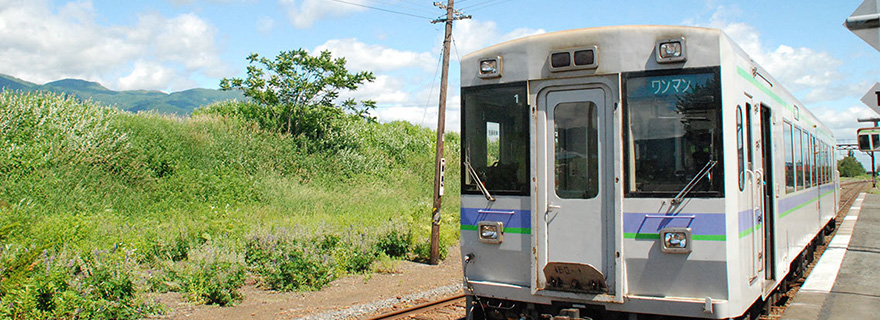
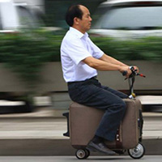

1人〇〇

1人でいると安心します。
1人でいると死にたくなります。
一人旅
彼女とどころか海外にすら行ったことないです。一番遠い旅行は高校の修学旅行で行った沖縄です。
彼女と旅行に行ったことはありますが、一人で行くほうが気楽で楽しいです。鈍行列車で遠くに行くことに耐えられる強靭な肉体とメンタルを持ち合わせた彼女ができれば話は別だと思いますが、そんな子はきっと現れないでしょう。
今まで鈍行で行った場所は鳥取、広島、兵庫、大阪、京都など関西が多いです。本州からは出ないです。だいたい帰りに京都に寄って清水寺から坂を下る途中にあるお茶漬け食べ放題の店に寄ります。
滋賀県は通りたくない
 琵琶湖の西側の電車は京王線の相模原線、高尾線と同じくらいわかりづらいので嫌いです。でも関西に行くには必ず通らなければならないのでそこだけ気を張り詰めています。やはり旅行は一人に限ります。